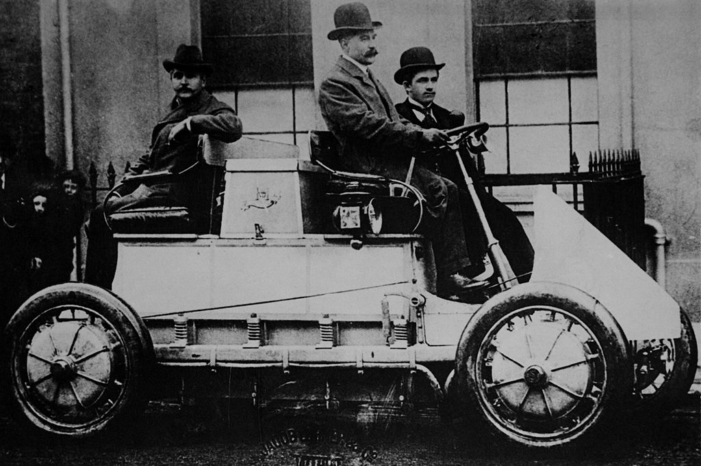
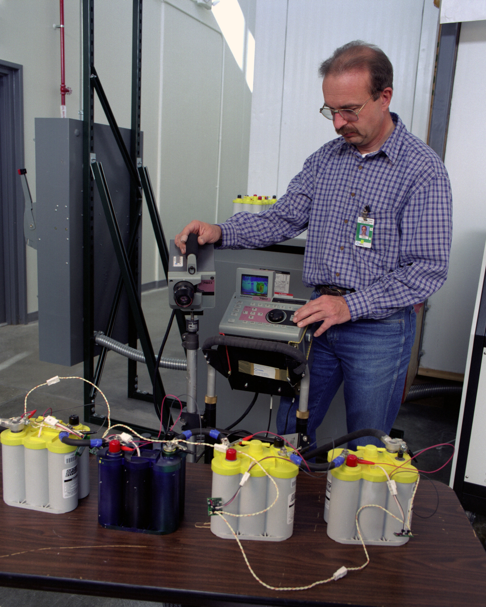
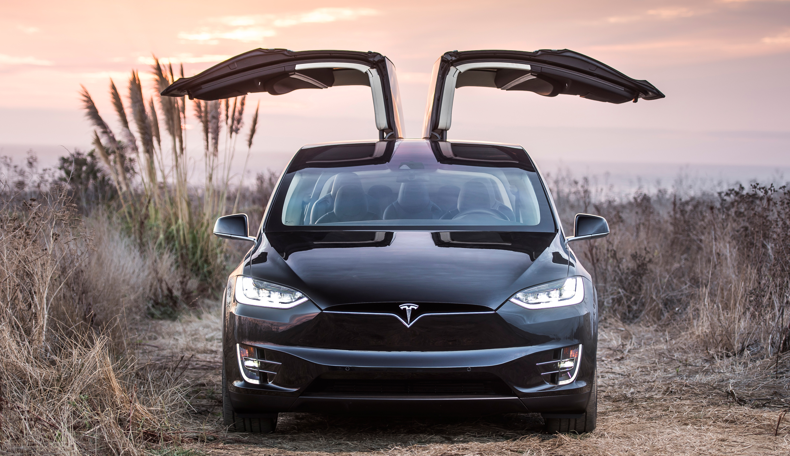

First Crude Electric Vehicle Is Developed:
Around 1832, Robert Anderson develops the first crude electric vehicle, but it isn't until the 1870s or later that electric cars become practical. Pictured here is an electric vehicle built by an English inventor in 1884.
Around 1832, Robert Anderson develops the first crude electric vehicle, but it isn't until the 1870s or later that electric cars become practical. Pictured here is an electric vehicle built by an English inventor in 1884.

World's First Hybrid Electric Car Is Invented:
In 1901, Ferdinand Porsche, founder of the sports car by the same name, creates the Lohner-Porsche Mixte -- the world's first hybrid electric car. The vehicle is powered by electricity stored in a battery and a gas engine.
In 1901, Ferdinand Porsche, founder of the sports car by the same name, creates the Lohner-Porsche Mixte -- the world's first hybrid electric car. The vehicle is powered by electricity stored in a battery and a gas engine.

Building a Better Electric Car:
In 1999, behind the scenes, scientists and engineers work to improve electric vehicles and their batteries. Pictured here is a researcher at the Energy Department's National Renewable Energy Lab testing electric vehicle batteries.
In 1999, behind the scenes, scientists and engineers work to improve electric vehicles and their batteries. Pictured here is a researcher at the Energy Department's National Renewable Energy Lab testing electric vehicle batteries.

The Future of Electric Cars:
Currently, electric vehicles hold a lot of potential for helping the U.S. create a more sustainable future. If the U.S. transitioned all the light-duty vehicles to hybrids or plug-in electric vehicles, we could reduce our dependence on foreign oil by 30-60 percent, while lowering the carbon pollution from the transportation sector by as much as 20 percent.
Currently, electric vehicles hold a lot of potential for helping the U.S. create a more sustainable future. If the U.S. transitioned all the light-duty vehicles to hybrids or plug-in electric vehicles, we could reduce our dependence on foreign oil by 30-60 percent, while lowering the carbon pollution from the transportation sector by as much as 20 percent.